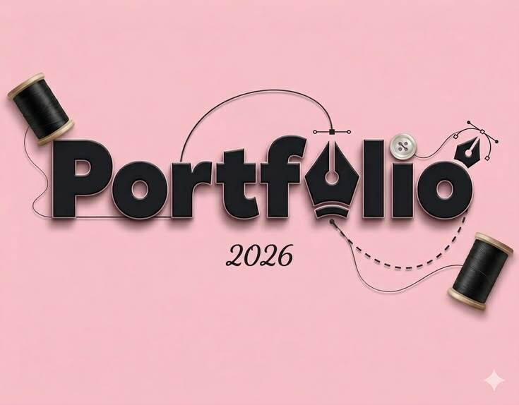

My Projects
A selection of things I've built while learning.
Music Education and Score-Writing Projects
Development and preparation of music theory materials, teaching resources, musical scores, compositions, arrangements, and other educational materials for teaching and learning.
Music · Sound
Data Science Learning Projects
Beginner-level projects undertaken as part of my current Data Science studies, involving the organisation, analysis, interpretation, and presentation of data while developing my computing and analytical abilities.
Python · Numpy · Pandas · Scikit-Learn